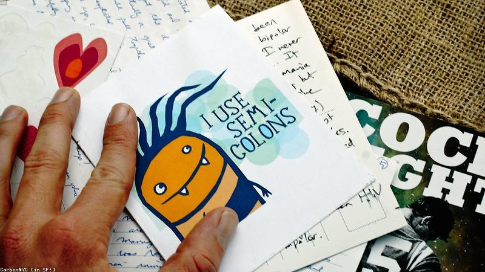

NO. 43 · 治癒
手寫的回信
慢一點的回覆，反而療癒。
她給許久不聯絡的筆友寫信，以為石沉大海。三週後收到手寫回信，字跡歪斜卻認真。
筆友寫：『你說的孤單，我也懂。慢點寫沒關係，我們不趕。』
她把信夾在書裡。從此每封信都慢慢寫，像在陪另一個自己散步。

她給許久不聯絡的筆友寫信，以為石沉大海。三週後收到手寫回信，字跡歪斜卻認真。
筆友寫：『你說的孤單，我也懂。慢點寫沒關係，我們不趕。』
她把信夾在書裡。從此每封信都慢慢寫，像在陪另一個自己散步。